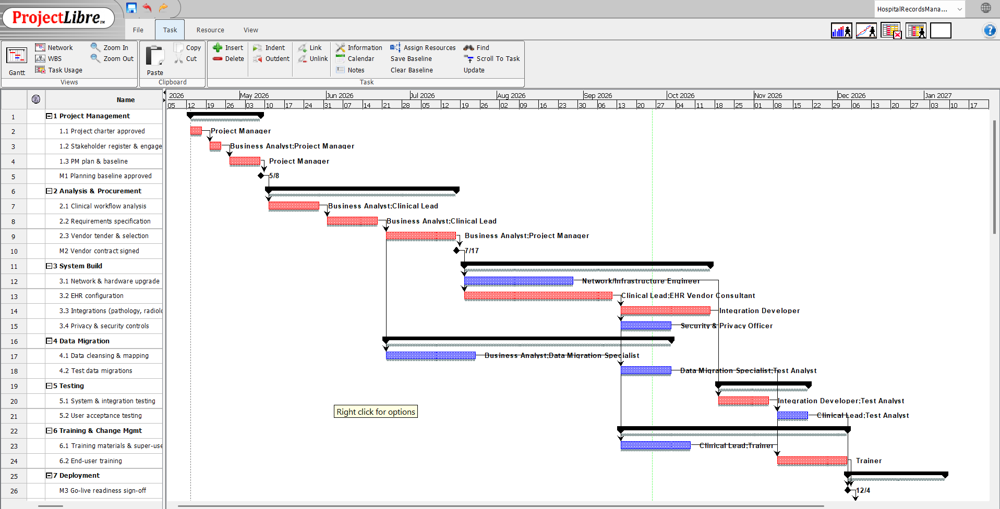
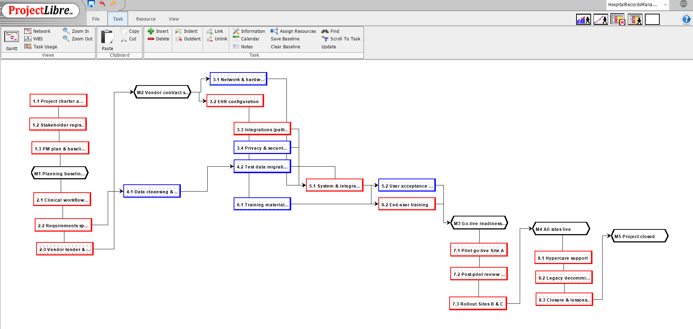
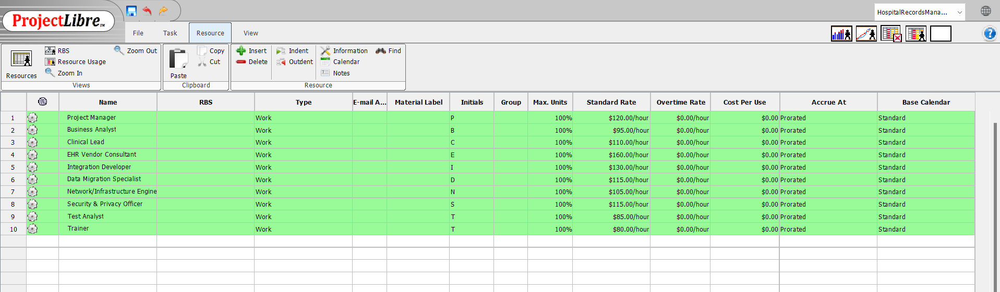

Schedule, Cost & Resources
When will the EHR go live, what will it cost, and what drives the date?
Schedule and critical path

Add screenshot: images/gantt.pngWhat this shows
The baseline runs 230 working days, from 13 Apr 2026 to 26 Feb 2027, with 5 milestones. The critical path is 1.1–1.3 → 2.1–2.3 → 3.2 → 3.3 → 5.1 → 6.2 → 7.1–7.3 → 8.1–8.3.
How it connects
EHR configuration (3.2, 40 days) is the longest critical task and is also high risk R03 (Risk). Data cleansing (4.1) has 70 days of float, but it carries our highest risk (R01), so float doesn't mean safe.
Decision / implication
3.2 and 3.3 get weekly progress reviews. Any day lost on a critical task moves go-live by the same amount.

Add screenshot: images/network.pngWhat this shows
Task dependencies. The critical tasks form one unbroken chain from charter to closure.
How it connects
Parallel paths (3.1 hardware, 4.1–4.2 data, 6.1 training materials) carry float, so they can absorb small delays.
Decision / implication
Delays should be recovered on the critical chain first (as CR-02 does on 3.3).
Milestones
| ID | Milestone | Baseline date |
|---|---|---|
| M1 | Planning baseline approved | 8 May 2026 |
| M2 | EHR vendor contract signed | 17 Jul 2026 |
| M3 | Go-live readiness sign-off | 4 Dec 2026 |
| M4 | All sites live | 8 Jan 2027 |
| M5 | Project closed | 26 Feb 2027 |
Cost and resources
| Phase | Planned cost |
|---|---|
| 1 Project management | $23,000 |
| 2 Analysis & procurement (incl. $2.4M EHR licences) | $2,483,600 |
| 3 System build (incl. $650k hardware) | $801,400 |
| 4 Data migration | $66,000 |
| 5 Testing | $41,400 |
| 6 Training & change | $43,200 |
| 7 Deployment | $47,600 |
| 8 Transition & closure | $44,400 |
| Budget at completion (BAC) | $3,550,600 |
| Contingency reserve (10%) | $355,060 |
| Approved budget | $3,905,660 |

Add screenshot: images/resources.pngWhat this shows
10 resources, from $80/hr (Trainer) to $160/hr (EHR Vendor Consultant), plus fixed costs for licences and hardware.
How it connects
86% of the budget is fixed cost committed at vendor selection (M2). The labour cost on critical tasks is what earned value tracks on the Tracking page.
Decision / implication
After M2, the main cost exposure is labour overruns on the critical path, which the 10% contingency covers (CR-02 used $25,600 of it).